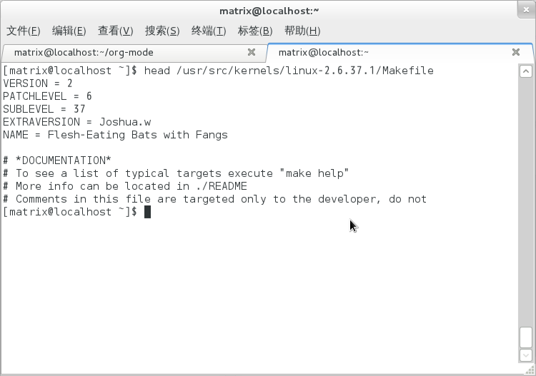
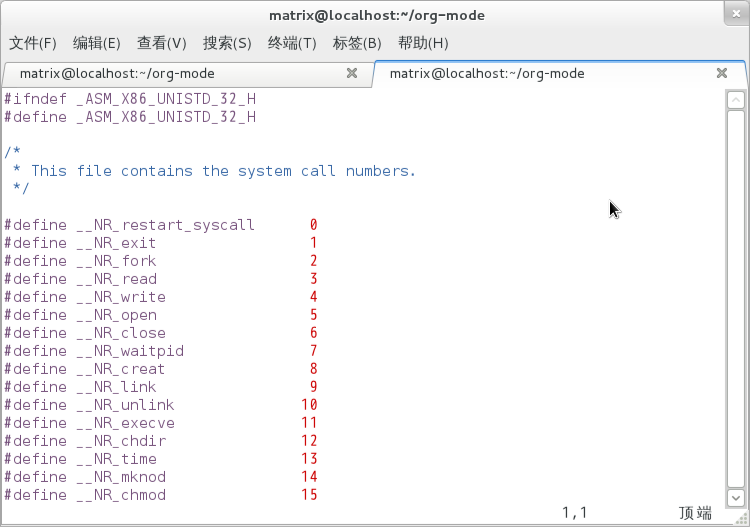

Compile the kernel to add a system function calls
What i know about systemcall:
In linux,systemcall as a abnormal type to achieve,it will run the machine Code to create a abnormal signal,create an interrupt or abnormal is important to the systemcall to transform the user mode to kernel mode.
only can user mode program trap into kernel by gate(execute interrupt operation),does the user mode program can use some special function,until finishing a systemcall,system execute iret(interrupt return operation), then system back to the user mode,and give control to process;
- an example of getuid()
-

- Table of Contents
Table of Contents
- 1 preparation
- 2 compile the kernel
- 2.1 cd /usr/src/linux;
- 2.2 make mrproper
- 2.3 make xconfig or make menuconfig
- 2.4 make dep
- 2.5 make clean
- 2.6 make bzImage
- 2.7 make modules
- 2.8 make modulesinstall
- 2.9 cp /usr/src/linux/arch/i386/boot/bzImage /boot/vmlinuz
- 2.10 cp /usr/src/linux/arch/i386/boot/System.map /boot/System.map
- 2.11 edit /etc/lilo.conf(LILO) or /boot/grub/grub.conf(GRUB)
- 2.12 reboot
- 3 Test
1 preparation
1.1 Download the source
you have your source file in usr/src,if it's empty,
get it at http://kernel.org and ftp://ftp.kernel.org
mine is 2.6.37.1
wget http://cs3.swfu.edu.cn/~101152025/git/kernel_source/linux-2.6.37.1.tar.bz2
1.2 Change your Makefile
VERSION ＝ 2
PATCHLEVEL ＝ 6
SUBLEVEL ＝ 37
EXTRAVERSION ＝ yourname(whatever!) change to your version（2.6.37.xxx）

1.3 Modify the source file
assume a new syscall as
mycall(int number)
It's a simplest function of cp
asmlinkage int sys_mysyscall(const char* s_file, const char* t_file)
{
//printk("hello,world!\n");
int bytes_read, bytes_write;
int from_fd, to_fd; //文件标识符
char buffer[100];
char *ptr;
mm_segment_t old_fs;
old_fs = get_fs(); //保存原来的段
set_fs(KERNEL_DS); //设置为数据段
if ((from_fd = sys_open(s_file,O_RDONLY,0)) == -1)
return -1;
if ((to_fd = sys_open(t_file,O_WRONLY|O_CREAT,S_IRUSR|S_IWUSR)) == -1)
return -2;
while(bytes_read=sys_read(from_fd,buffer,1)) //读源文件,一个字符一个字符的读
{
if((bytes_read==-1)) break;
else if(bytes_read>0)
{
ptr=buffer;
while(bytes_write=sys_write(to_fd,ptr,bytes_read)) //写入文件
{
if((bytes_write==-1))break;
/* 写完了所有读的字节 */
else if(bytes_write==bytes_read) break;
else if(bytes_write>0)
{
ptr+=bytes_write;
bytes_read-=bytes_write;
}
}
if(bytes_write==-1)break;
}
}
set_fs(old_fs);
return 0;
}
1.4 Link the new systemCall
after add a new systemCall in sys.c,next mission is to make the kernel know the systemCall in there
so we need edit two files:
- 1. unistd32.h this file has a list of systemcall
format: #define _NRname NNN
add #define _NRmysyscall in it

- 2. /usr/src/linux—2.6.37.1/arch/x86/kernel/syscalltable32.s
-
add .long sysname to the end of file
this file contains pointer that point to the kernel function
2 compile the kernel
2.1 cd /usr/src/linux;
2.2 make mrproper
2.3 make xconfig or make menuconfig
2.4 make dep
2.5 make clean
2.6 make bzImage
2.7 make modules
2.8 make modulesinstall
2.9 cp /usr/src/linux/arch/i386/boot/bzImage /boot/vmlinuz
2.10 cp /usr/src/linux/arch/i386/boot/System.map /boot/System.map
2.11 edit /etc/lilo.conf(LILO) or /boot/grub/grub.conf(GRUB)
now grub had upgraded to grub2
2.12 reboot
3 Test
3.1 after reboot you can test your program
#include <stdio.h>
void main()
{
syscall(341, "./sourcefile.c", "./destination.c");
/*first arg is syscall_number,second arg is source,
third arg is destination file*/
}
success!
Now we had finished a simple systemcall
Date: 2012-10-12 22:58:09 CST
HTML generated by org-mode 6.33x in emacs 23